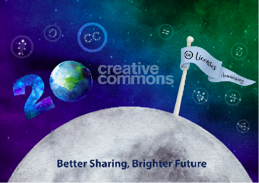

Honoring 20 years of open sharing using CC licenses, join us in 2022 to celebrate Better Sharing – advancing universal access to knowledge and culture, and fostering creativity, innovation, and collaboration for a brighter future. Help us reach our goal is to raise $15 million for a future of Better Sharing.
Donate NowCreative Commons is a nonprofit organization that helps overcome legal obstacles to the sharing of knowledge and creativity to address the world’s pressing challenges.

To make open sharing of research outputs the norm in climate science, Creative Commons, SPARC and EIFL are proud to launch a 4-year Open Climate Campaign with funding from Arcadia Fund, a charitable fund of Lisbet Rausing and Peter Baldwin, which builds on planning funds from the Open Society Foundations. Climate change, and the resulting …